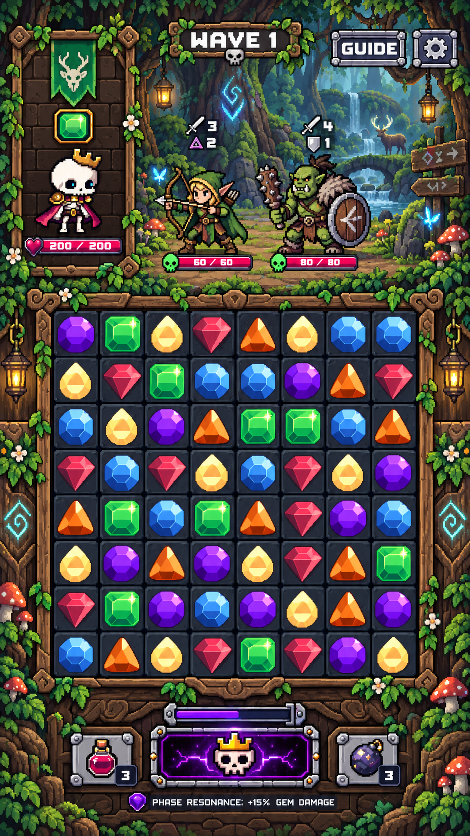
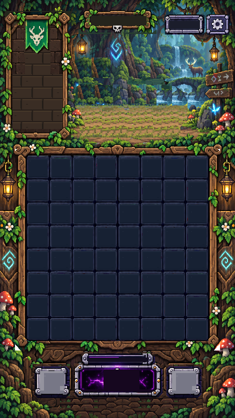
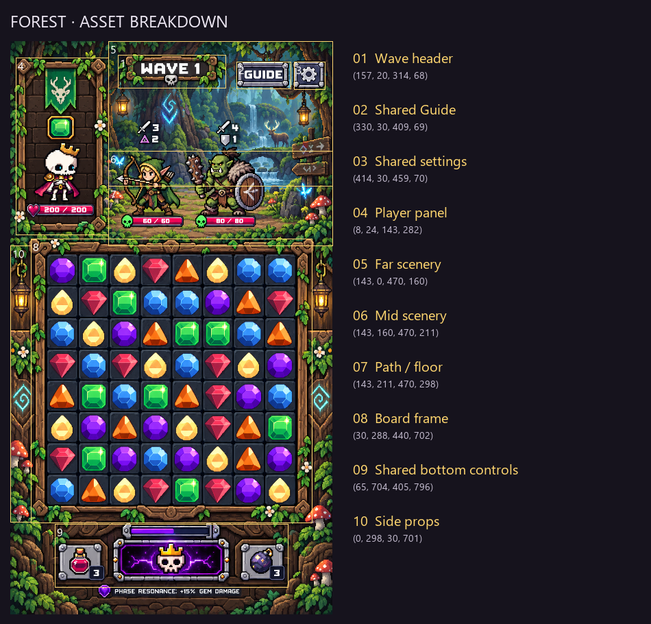

The surfaces hidden by the elf/orc are reconstructed from source foliage, wood, water and ground clusters. They are not recovered original pixels; the path and foliage bank need visual approval.
Zero generations. Native PNGs and reopened LibreSprite files checked pixel-for-pixel. Technical checks establish file properties, not visual approval.
Overlay


Breakdown

Native assets
One PNG pixel per CSS pixel at 100% browser zoom. Dimensions and palette counts are verified from individual files.